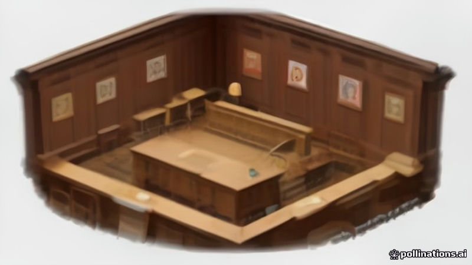

ব্রাজিলের নির্বাচনী আদালত মেটা-কে ১.৩ মিলিয়ন ডলার জরিমানা, নির্বাচনে হস্তক্ষেপের ইচ্ছা না পাওয়া গেছে
France 24, DW · 2026-11-11
AI-generated illustrationপ্রেসিডেন্ট লুলার জোটের অভিযোগের পর ব্রাজিলের সর্বোচ্চ নির্বাচনী আদালত মেটা-কে জরিমানা করলেও, নির্বাচনী হস্তক্ষেপের কোনো প্রমাণ না পেয়ে।
ফ্রান্স ২৪ জানায়, ব্রাজিলের নির্বাচনী আদালত মেটা-কে ১.৩ মিলিয়ন ডলার জরিমানা করেছে। এই শাস্তি প্রেসিডেন্ট লুলার জোটের অভিযোগের ফলস্বরূপ দেওয়া হয়।
ডব্লিউ রিপোর্ট করে, আদালত বলেছে নির্বাচনে হস্তক্ষেপের ইচ্ছার কোনো প্রমাণ পাওয়া যায়নি। মেটা এই অভিযোগকে 'মিথ্যা' বলে প্রতিরক্ষা করার পরিকল্পনা জানিয়েছে।
Written by AI from facts reported by the outlets named above. It may contain errors; check the original reporting.English version
Brazil Electoral Court Fines Meta $1.3 Million, Finds No Intent to Influence Election
France 24 reports that Brazil's electoral court imposed a $1.3 million fine on Meta. The penalty follows a complaint filed by President Lula's coalition.
DW notes that the court said there was no evidence of intent to influence the election, and Meta said it will defend itself against what it called false allegations.